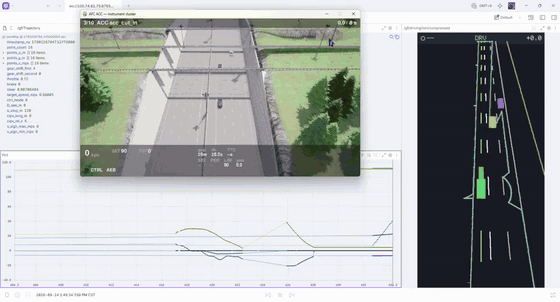
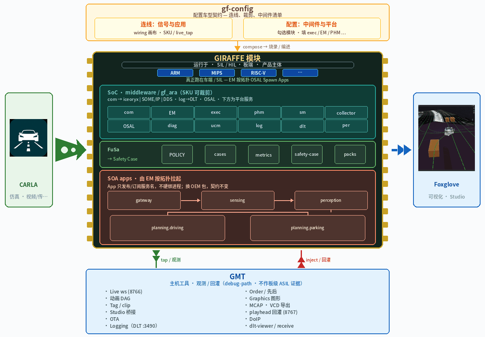
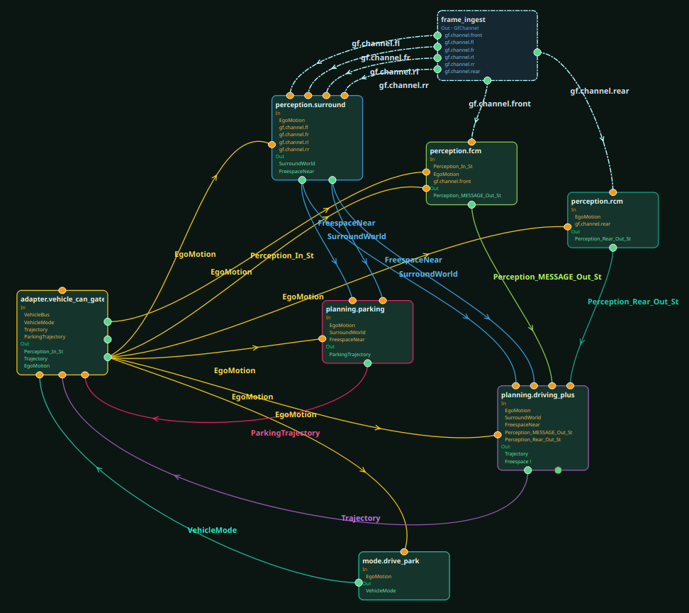
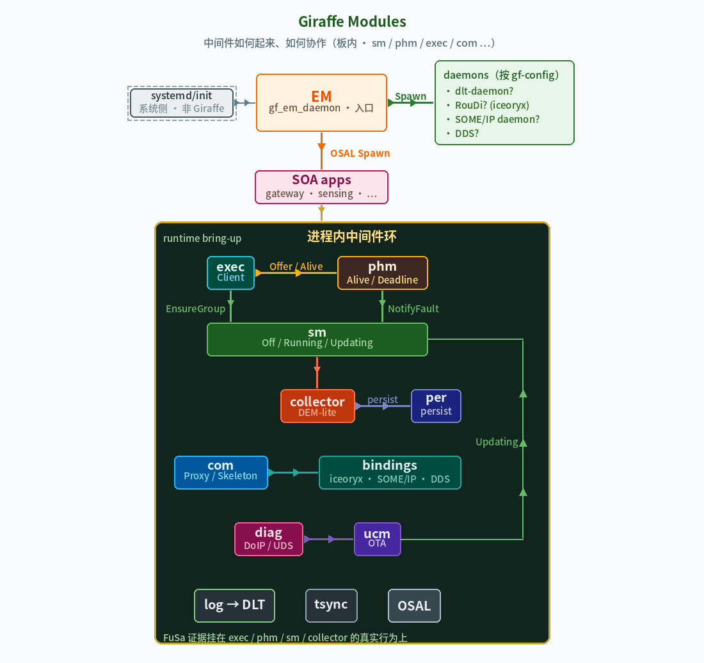

AI Giraffe Flow
可裁剪的车规 SOA 中间件 + 工具链。
为什么做：板上要的是可裁剪的 SOA，先在台架上配、跑、看见、压住，再把 同一套 EM 上车。做好之后：OEM 合同能被工具分解进运行时，不用手写接线；杀掉一个进程，控车不断；真环上的一拍时延量得着；同一条链灌得回去；过了才 CD。真机是 last mile。
产品是可裁剪的 gf_ara::* 运行时（ARM Linux 优先；OSAL 预留 MIPS / RISC-V）和围着它的三件工具：gf-config 写要跑什么、谁连谁；Giraffe 模块 是板上 SOA（EM 拉起、通信、PHM、隔离）；GMT 回答「谁在何时发了什么」，并在同一条链上做回灌。仓内感知和规划是 闭环载荷，不是 ADAS 产品——用来把上面这些特点跑实。OEM 相机和网络权重在仓外。
| 特点 | 图什么 |
|---|---|
| 健壮 / 隔离 | 故障关在一个进程，其余 hold-last。一套 EM 管拓扑：拉起、PHM、只再拉起那一个，不整栈重启。台架和板同一个入口。 |
| 时延 | 高吞吐、低时延；overlay-latest，互不卡住。 |
| 看得见 | 活链在明处：能量、能看，回灌也还是同一幅画。 |
| 回灌 / 回放 | 同一套接线、同一套类型，把场景灌回这条链。 |
| CI/CD with FuSa | compose → generate → SIL，FuSa 走在 CI 里。过了才 CD。 |
| OEM 分解 | 工具把 OEM 合同拆成模块。不手写接线，改动可追溯。 |
下面两段视频就是这条环在台架上的样子——AFC（单相机）和 ADC（环视）。车是用来把人留下的；要证明的是车后面的栈。
English: English
Single camera (AFC) mp4

Multi cameras (ADC) mp4

总览
| # | 主线 | 角色 | 深入 |
|---|---|---|---|
| 1 | gf-config | 工具链 · 配置侧 | tools/gf-config · SOR |
| 2 | Giraffe 模块 | 产品主体 · SOA 运行时、FuSa 证据 | middleware · fusa/ · 设计 |
| 3 | GMT | 工具链 · 观测 / 回灌 / Foxglove | tools/gmt · gmt_board · 可观测演示 |

车载以太网从 CAN 的信号表讲到以太网骨干。现在的新能源车上，这条骨干跑 SOME/IP 服务、DDS 数据分发、DoIP 诊断和刷写，并用 gPTP 给 TSN 对时。点一个协议，再勾选特性，就能看到组出来的包。English。加密和密钥在 AI Fortress Auto。
FuSa：
待添加。
1. gf-config（配置侧工具链）
定 要什么能力、谁连谁、板端裁哪些模块，不实现算法。两页写回三层资产：
| 页 | 写什么 | 产物 |
|---|---|---|
| 1 · 信号与应用 | 薄 SKU（req.yaml）+ 信号图画布（wiring.yaml） |
deployments / dataflows / live_tap |
| 2 · 平台运行时 | runtime_modules + cfg/gf_ara_cfg/*（exec · EM 启动表 · PHM · Collector · diag · log · ucm；per/tsync 可勾选裁剪） |
gf_ara_cfg_manifest → CMake 裁剪 / EM 拓扑 |
- Verify / Generate → SOR + Proxy/Skeleton + lineage（含
platform_em_launch等门禁）

gf-config projects/afc/giraffe.yaml
细节：tools/gf-config/README_zh.md · WORKFLOW
2. Giraffe 模块（主体）
这里是板上和 SIL 里真正跑着的 中间件。SKU 里的 FCM、Octave 规划 → Trajectory 是 载荷：给 GMT、Foxglove、回灌、PHM、CI 一条诚实的 pub/sub 环，用来验证平台，而不是宣称本仓是量产 ADAS。

2.1 分层
| 层 | 目录 | 做什么 |
|---|---|---|
| API / 运行时 | middleware/ |
gf_ara::* 对外；gf::* 对内；按 SKU runtime_modules 裁剪 |
| 传输插件 | middleware/bindings/ |
iceoryx（机内）、SOME/IP、DDS、cross_domain_ipc（MCU） |
| 执行与健康 | exec（EM daemon）/ phm / sm / collector | 拓扑拉起、relaunch、心跳、FG、事件收集 |
| 可移植 | osal/ · hal/ |
时钟 / 线程 / 进程 Spawn；主目标 ARM Linux |
| 载荷 App | projects/<sku>/apps/ |
Gateway / FCM / 规划 — 用来 压 平台（.m 金源 → C 1:1） |
| 上位机场景 | carla_scenarios/ |
CARLA Client A：布景 + 仪表；另一路压力源，不是控制器 |
| 集成工程 | projects/ |
OEM DBC / wiring / hpp / SIL·HIL / CI 脚本 |
| FuSa 证据 | fusa/ |
cases / metrics / Safety Case 骨架（非证书） |
公开约定：业务只依赖 semantic 服务名；OEM 差异收在 adapter/gateway。详见 DESIGN。
2.2 中间件包（按需裁剪）
与架构 GIF 中 Giraffe SoC 芯片对齐（com · EM∈exec · exec · phm · sm · collector · OSAL · diag · ucm · log · per · tsync）。
| 包 | 作用 |
|---|---|
| com | 统一通信抽象（Proxy / Skeleton） |
| bindings/iceoryx 等 | 传输后端 |
| exec | ExecutionClient + EmDaemon（OSAL Spawn；GIF 中 EM） |
| phm / sm / collector | 健康 / FG / 事件收集 |
| osal | OS 抽象（含 process；GIF 中 OSAL） |
| diag / ucm | DoIP 会话 / OTA 编排（SIL） |
| log | 日志 lite |
| per / tsync | 持久化 KV stub / 时间同步骨架（可裁剪） |
| trace | 时序 → VCD / GMT（偏 debug-path） |
2.3 闭环载荷（示例 SKU）
两套 SKU 都用来 验证 com / EM / 可观测性，不是交付感知或规划产品。规划金源：octave_planning/。
| SKU | 相机 | 载荷链 |
|---|---|---|
| AFC | 单前视 | gateway → perception.fcm → planning.driving |
| ADC | 环视 | gateway → surround / fcm / rcm → planning.driving_plus · parking · mode.drive_park |
车态源（二选一）
· gateway（continuous / 无回灌） 或 · inject（playhead，替 gateway）
│
▼ EgoMotion / Perception_In （ADC 另有 surround / 后视）
▼
perception.* → Out / Near / World ← 载荷（不是相机网络）
│
▼
planning.* → Trajectory ← 载荷（.m 金源，C 1:1）
│
▼
gmt_board：tap NDJSON · gf_foxglove_ws :8765
│
└─ 时延 / 隔离 / 「谁何时发了什么」 / 回灌复现
| 进程 | 角色 |
|---|---|
adapter.vehicle_can_gateway |
CAN/仿真 → EgoMotion、Perception_In…（回灌时关闭） |
perception.fcm · surround · rcm |
载荷感知（ADC 加环视与后视） |
planning.driving / driving_plus |
Ego + 感知 → Trajectory（载荷） |
gf_iox_obs_tap |
白名单服务 → NDJSON（GMT 录制） |
gf_foxglove_ws |
iceoryx → Foxglove Studio + BEV（tools/gmt_board） |
gf_iox_obs_inject |
playhead / continuous 回灌 Ego |
SKU 载荷在 projects/<sku>/apps/。iceoryx 烟测：middleware/bindings/iceoryx/testcases/。
2.4 编译与运行
AFC 与 ADC 同一套脚本。SIL 用环境变量覆盖帧源；板上 freeze 默认仍是 isp。上位机 CARLA：carla_scenarios/。CI：devops/。
GF_FRAME_SOURCE = carla · replay · colorbar · isp · none
bash projects/adc/scripts/compile_sil.sh
GF_FRAME_SOURCE=carla bash projects/adc/scripts/run_sil.sh
# 板上同一套 EM（stage 之后）：
# ./projects/adc/build-sil/runtime/bin/giraffe_launch
AFC 把路径换成 projects/afc/scripts/ 即可。回灌 / 回放在 GMT，不在这里。
2.5 与工具链的边界
| Giraffe 模块负责 | 不负责（交给工具） |
|---|---|
| 进程内算法与 I/O、iceoryx 上真发真收 | 画 wiring / 裁 SKU → gf-config |
| SIL：systemd/init → EM → daemons + App；tap/inject/Foxglove/DoIP 属 GMT_depend（非 EM） | Studio / Tag / MCAP；Logging 走 DLT |
| semantic 契约在板上成立 | 离线改 DBC / lineage 会议替代 → compose |
FuSa 证据（fusa/） |
GMT 仍属 debug-path（不作板级 ASIL 证据） |
2.6 FuSa（属于 Giraffe 模块）
通向 完整 Safety Case 的证据入口：L1/L2/L3、隔离、参考延时、Safety Case 骨架。入口：fusa/。
bash fusa/scripts/run_cases.sh
GF_FUSA_SIL=1 bash fusa/scripts/run_cases.sh
bash fusa/scripts/measure_latency.sh # 可选：延时快照
3. GMT（观测侧工具链）
多进程 SIL 联调时，光看终端往往对不齐「谁在何时发了什么」。GMT 把 tap NDJSON 接到本机时间轴：scrub / 倍速、playhead 回灌、Tag → MCAP。Foxglove 直播是 C gf_foxglove_ws（:8765，tools/gmt_board）；Python GMT bridge foxglove 只做 JSONL 回放。run_sil 不起 GMT Live :8766。

| 端口 | 用途 |
|---|---|
| 8765 | Foxglove Studio（gf_foxglove_ws；BEV + 模块 I/O） |
| 8766 | GMT GUI live（可选；run_sil 不启动） |
| 8767 | playhead 回灌 |
pip install -e tools/gmt -e 'tools/gmt[gui]'
GMT gui --project projects/afc \
--session projects/afc/scenarios/overtake_acc_aeb.jsonl
细节：tools/gmt/README_zh.md · gmt_board · OBSERVABILITY_DEMO
仓库地图
| 目录 | 用途 |
|---|---|
| middleware/ | Giraffe 运行时（主体） |
| octave_planning/ | 规划 .m 金源（载荷，不是产品） |
| projects/ | OEM SKU：apps、wiring、SIL·HIL、CI |
| carla_scenarios/ | 上位机 CARLA 布景 + 仪表 |
| projects/afc/apps/ | AFC 载荷（gateway / FCM / 规划） |
| projects/adc/apps/ | ADC 载荷（surround / driving_plus / parking） |
| fusa/ | FuSa 证据 |
| tools/gf-config/ | gf-config |
| tools/gf-codegen/ | gf-codegen |
| tools/gf-octavecoder/ | .m → C 1:1 |
| tools/gmt/ | GMT 主机 |
| tools/gmt_board/ | tap / inject / gf_foxglove_ws |
| devops/ | 台架 CI → CD last mile（真机） |
| docs/zh/ | 文档索引 |